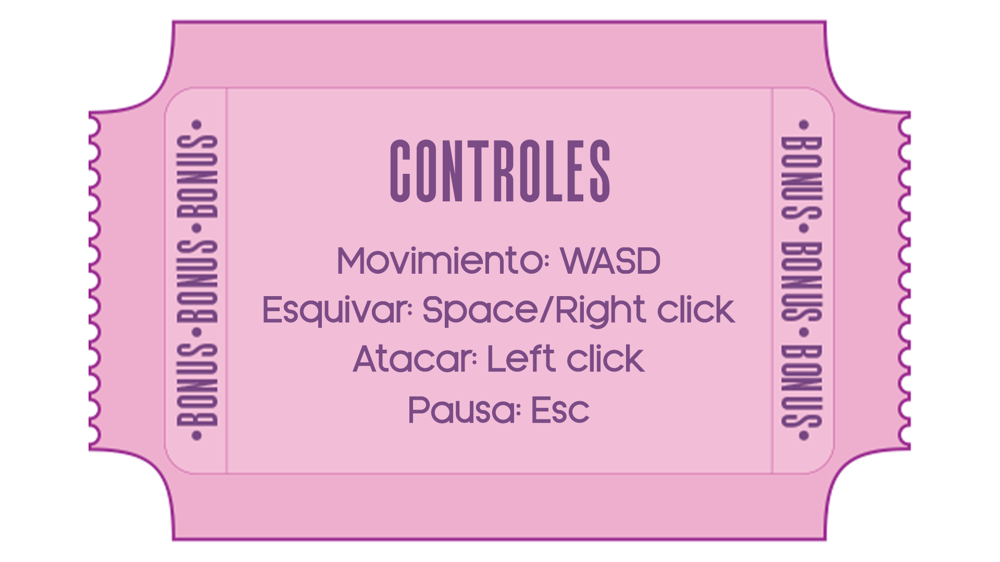
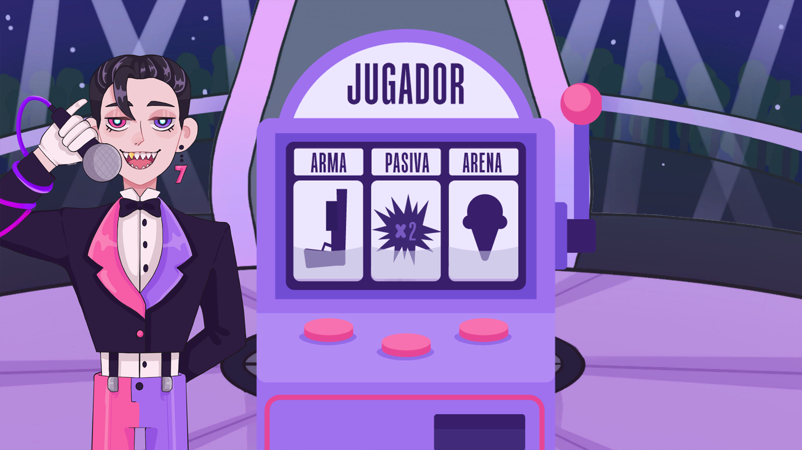
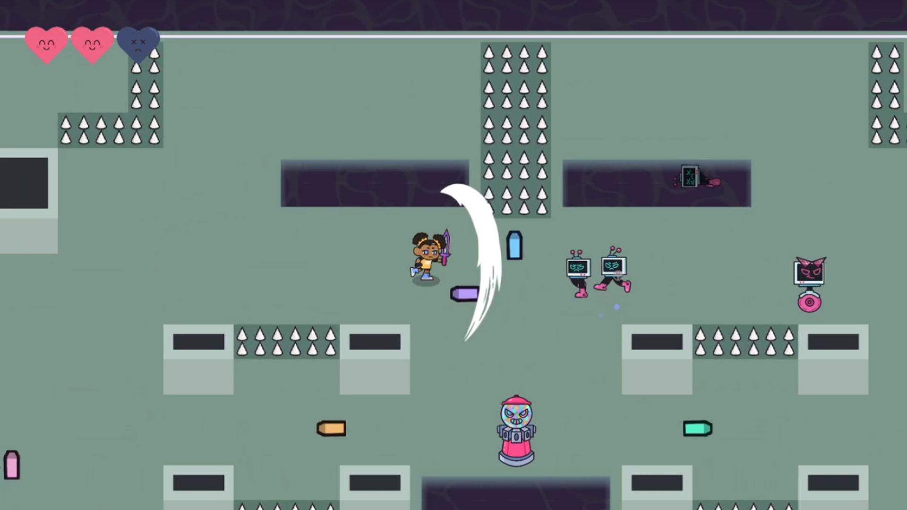

Game Jam · 2022
La Ruleta del Infortunio
English title: Viktor's Mayhem
Welcome, dear viewers, to the show where the slot machine decides your destiny! Pull the lever, collect your misfortune, and step into the arena — the prize is a surprise, the punishment you can imagine.

The game
La Ruleta del Infortunio is a TV game show nobody should want to be on. A slot machine rolls your fate; whatever misfortune it lands on, you carry into an arena fight — move, dodge and attack your way through while a delighted host commentates your suffering.
Designing around randomness
The design bet: make the punishment the content. Random handicaps re-texture the same arena every run — each curse changes how you must play rather than just making numbers worse. The challenge was balancing misfortunes to stay genuinely fun: cruel enough to earn the show's premise, never so cruel that a run feels pre-lost.
What I designed
- The show-format game loop: slot machine → curse → arena → payoff.
- The misfortune roster and its balance rules.
- Combat and arena encounters tuned around WASD movement, dodges and melee attacks.


